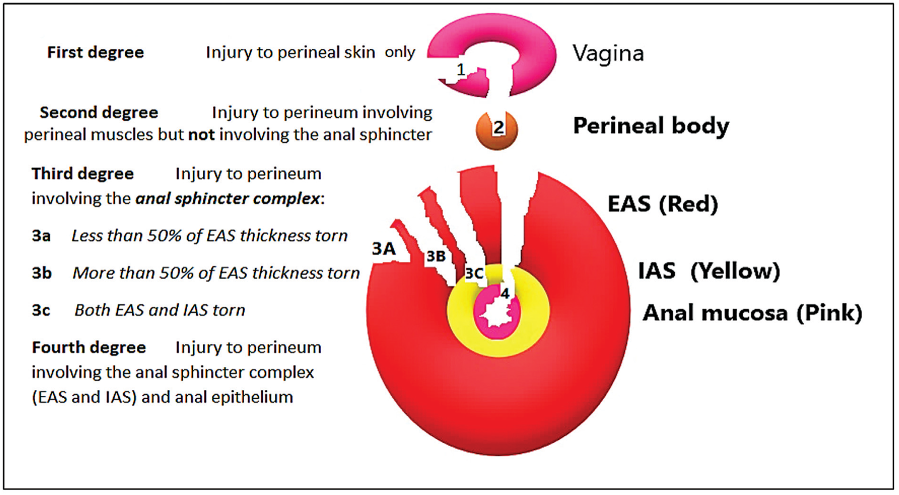

Rotura perineal: os quatro graus e o períneo da Lurdinha
Ginecologia4 graus por profundidade2º sempre corrige1º pode não suturarPeríneo da Lurdinha
?
A rotura do parto pode parar na pele ou chegar ao reto — e a partir de qual grau você é obrigado a corrigir na hora?
A rotura perineal: a interseção com a obstetrícia
A rotura perineal é a peça onde a distopia encosta na obstetrícia — é uma complicação típica de parto, e é o que empobrece o períneo e o assoalho a longo prazo. O corpo perineal, medido no POP-Q, é justamente o que encurta quando o períneo se rompe. Classificá-la por profundidade é o que orienta a conduta na sala de parto.
Os quatro graus, por profundidade crescente
A rotura tem quatro graus, e a lógica é a profundidade: 1º grau — só pele e mucosa; 2º grau — envolve a parte muscular (o grupamento muscular do períneo); 3º grau — atinge o esfíncter anal; 4º grau — chega ao reto (a mucosa anorretal). Quanto mais fundo, mais grave e mais obrigatória a correção.
1º grau: quando se pode não suturar
Uma rotura de 1º grau na hora do parto, se for pequena, não estiver sangrando e só lesou pele e mucosa, pode ser deixada sem sutura. É a única situação em que a conduta expectante cabe — lesão superficial, seca, mínima.
2º grau em diante: sempre corrige na hora do parto
Da rotura de 2º grau em diante, sempre se corrige na hora do parto. Se não corrigir, mais tarde surgem retração do períneo, dor e até lesão do assoalho pélvico — o preço de deixar músculo, esfíncter ou reto sem reparo. Segundo, terceiro e quarto graus vão para o reparo imediato, sem exceção.
O períneo da Lurdinha: a rotura de 2º grau é lesão muscular
E aqui o fio se amarra: a rotura de 2º grau significa lesão de grupamento muscular — é exatamente o períneo da Lurdinha. Ela teve rotura de 2º grau, o gancho que conecta o Caso 1 à rotura perineal. Esse períneo dela, com a episiotomia e a retração de 2º grau, é parte do que se corrige quando a distopia dela for tratada — e é a ponte para o fecho.
1º grau pele e mucosa
Só pele e mucosa. Se for pequena, seca e sem sangramento, pode ser deixada sem sutura — a única situação em que a conduta expectante cabe.
2º grau músculo
Envolve o grupamento muscular do períneo. Do 2º grau em diante, sempre se corrige na hora do parto. É o períneo da Lurdinha (rotura de 2º grau = lesão muscular).
3º grau esfíncter anal
Atinge o esfíncter anal. Reparo imediato, sem exceção.
Subdivisão do 3º grau (aprofundamento, hospital top)
3a — < 50% do esfíncter anal externo roto
3b — > 50% do externo
3c — externo + interno
4º grau reto
Chega ao reto (a mucosa anorretal) — o mais profundo. Reparo imediato.
A escada dos 4 graus de rotura perinealUma escada de profundidade crescente: 1º grau (pele/mucosa) → 2º (músculo) → 3º (esfíncter anal) → 4º (reto). A regra “do 2º grau em diante sempre corrige” marcada, com vermelho no 3º/4º grau; uma camada opcional abre a subdivisão 3a/3b/3c.Herói · gradua o degrau da roturaO corpo perineal e o períneo da LurdinhaA medida do corpo perineal (PB) — da parte posterior da vagina ao meio do esfíncter anal — e o seu encurtamento após a rotura, com a marca da episiotomia e da rotura de 2º grau: o períneo da Lurdinha.Esquema · o PB que conecta POP-Q e rotura

As lacerações perineais por grau (ilustração de ensino)
Ilustração médica sóbria das lesões do esfíncter anal obstétrico (OASIS) por grau — pele/mucosa, músculo, esfíncter e mucosa anorretal. Uma figura licenciada de atlas, não conteúdo gráfico gratuito, para ancorar a escada dos quatro graus.
Ojo OA et al. “Medical Illustration… OASIS Degrees of Severity.” J. Coloproctol. (Thieme/SciELO). Licenciada sob CC BY 4.0. Fonte: DOI.
real de achado (ilustração licenciada) — graus de rotura perineal
◆
Mapa do assoalhoFecha a coluna “corpo perineal → rotura” do mapa: o PB medido no POP-Q é o que encurta quando o períneo se rompe — a ponte direta para o períneo da Lurdinha.
Quiz — fixação
Rotura perineal de parto que envolve o grupamento muscular do períneo, sem atingir o esfíncter anal. Grau e conduta:
B — a virada. Músculo (sem esfíncter) = 2º grau → sempre corrige (2º em diante).
A.1º grau é só pele/mucosa — a lesão muscular já subiu de grau; e a expectante é só do 1º pequeno e seco.
C.3º grau exige esfíncter atingido, o que o enunciado nega.
D.4º grau chega ao reto — profundidade maior que a descrita.
Por que cair.o aluno pode subestimar “músculo” como superficial, mas é justamente o 2º grau que inaugura a obrigação de corrigir.
Sobre a conduta na rotura perineal, é correto:
B — a virada. A regra é 2º+ sempre corrige; o 1º pequeno/sem sangramento pode ficar sem sutura.
A.exagera: o 1º grau superficial e seco é a exceção legítima.
C.esfíncter e reto exigem reparo na hora — adiar gera incontinência anal e lesão do assoalho.
D.falso: não corrigir gera retração, dor e lesão do assoalho depois.
Por que cair.“na dúvida, sutura tudo” parece seguro, mas a diretriz reconhece a exceção do 1º grau mínimo.
A seguir
Com o períneo classificado e a régua dominada, todas as peças estão na mesa: é hora de pegar os sete números que abriram tudo e decodificar a dona Lurdinha por inteiro.